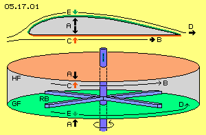
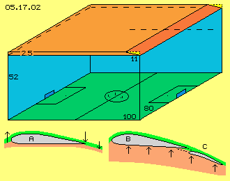
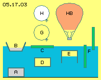
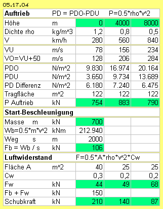
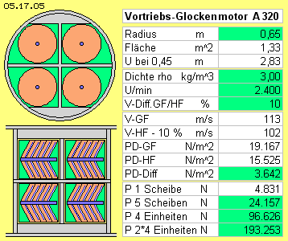
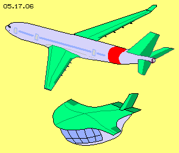

Grundlagen des Prinzips
Im vorigen Kapitel ´Luftdruck-Glockenmotor´ wurden die Bewegungsprozesse und Kraftwirkungen an Tragflächen übertragen in ein geschlossenes System. Die Basis dieses Prinzips ist der bekannte Auftriebseffekt, wie er bei jedem Flugzeug genutzt wird. Allerdings ist die Ursache dieser Erscheinung durchaus strittig und es gibt etwa zehn Hypothesen dazu. Meine Überlegungen hierzu sind in Kapitel ´05.01. Auftrieb an Tragflächen´ detailliert beschrieben. In Bild 05.17.01 sind oben die Luftbewegungen und Kraftwirkungen noch einmal skizziert.
Innerhalb des Profils (grau) ist keine Luftbewegung gegeben, es herrscht also ´normaler´ atmosphärischer Druck. Dieser wirkt von innen auf die obere und untere Fläche, ist also kräfteneutral (siehe Pfeile bei A) . Die Luft an der Unterseite (rot) ist ruhend, nur die Tragfläche bewegt sich relativ zur stationären Luft. Das ist gleichbedeutend mit einer Luft-Strömung (siehe Pfeil B) entlang der Unterseite mit der Geschwindigkeit des Flugzeuges. Die Luftpartikel treffen nicht lotrecht auf die Unterseite, sondern in einem flacheren Winkel. Darum ist der statische Druck gegen die Unterseite reduziert (siehe Pfeil C).
Entlang der Oberseite (grün) ist eine reale Luft-Strömung gegeben, weil die Luftpartikel in die relative Leere hinten-oben fallen. Dieser Sog breitet sich auch nach vorn aus, besonders ausgeprägt direkt über und entlang der Oberfläche. Darum startet dieser ´künstliche Wind´ schon weit vor und unter der Nase der Tragfläche. Eine Sogwirkung breitet sich mit Schallgeschwindigkeit aus, d.h. dieser Wind relativ zur Tragfläche existiert nur bei Unterschall-Flug. Diese reale Luftbewegung von etwa 50 m/s addiert sich zur Geschwindigkeit des Flugzeuges. Gegenüber der Unterseite ist die relative ´Strömung´ also schneller (siehe Pfeil D). Sie hat erhöhten dynamischen Strömungsdruck und kann nur entsprechend reduzierten statischen Druck auf die Oberfläche ausüben (siehe Pfeil E).

Die Differenz A-C drückt die untere Fläche nach unten. Die Differenz A-E drückt die obere Fläche nach oben. Einfacher ausgedrückt: die ganze Konstruktion der Tragfläche wird mit der Differenz C-E nach oben gedrückt. Diese resultierende Auftriebskraft entspricht der Differenz dynamischen Strömungsdrucks der beiden ungleich schnellen Luftbewegungen.
Nachbildung im geschlossenen System
Im Luftdruck-Glockenmotor werden diese Vorgänge im geschlossenen System eines runden Hohl-Zylinders nachgebildet, wie unten im Bild 05.17.01 skizziert ist. Auf allen Außen-Flächen dieses Behälters lastet der normale atmosphärische Druck (siehe Pfeile A), insgesamt kräfteneutral. Der ´künstliche Wind´ wird durch einen Rotor (blau) erzeugt und aufrecht erhalten. Seine Rotor-´Blätter´ (RB) haben ein Vierkant-Profil, sie arbeiten nicht wie herkömmliche Propeller. Sie bewirken nur die fortwährende Rotation der eingeschlossenen Luft. Die Rotorblätter bewegen sich in geringem Abstand über der unteren Innen-Fläche. Diese ist möglichst glatt und wird hier ´Gleitfläche´ (GF, grün) genannt. Der Abstand zur oberen Innen-Fläche ist größer. Sie ist möglichst rau gestaltet und wird hier ´Haftfläche´ (HF, rot) genannt.
Durch die unterschiedlichen Abstände und die unterschiedliche Oberflächen-Qualität sind die Strömungen entlang beider Flächen unterschiedlich schnell (siehe Pfeile B und D, oben langsamer, unten schneller). Sie weisen unterschiedlichen dynamischen Strömungsdruck auf und korrespondierend dazu unterschiedlichen statischen Druck auf die beiden Innen-Flächen (siehe Pfeile C und E, nach oben stärker, nach unten schwächer). Analog zu den Kräften an obiger Tragfläche ergibt sich hier durch die Differenzen A-C und A-E bzw. direkt durch C-E die Auftriebskraft.
Diese wirkt von innen auf die Innenflächen GF und HF, insgesamt nach oben gerichtet. Der Behälter ist fest verbunden mit dem Rumpf des Flugkörpers und damit wirkt diese Auftriebskraft auf das gesamte Fluggerät. Alle Teile sind ortsfeste Bestandteile des Systems, nur der Rotor ist ein drehendes Teil. Die Rotorblätter drehen nur in horizontaler Ebene und bewirken ebenso nur Luftbewegung in der Horizontalen.
Kraft ohne Gegenkraft
Jeder ´normale´ Mensch kann nicht verstehen, warum das sollte funktionieren können. Der Fachmann bringt es auf den Punkt: diese Vorstellungen widersprechen dem Gesetz von actio=reactio, also keine Kraft-ohne-Gegenkraft. Das ist seit langem eine fundamentale Erkenntnis, abgeleitet schon aus einfachen mechanischen Prozesse. Das ist vollkommen richtig - aber Fluide sind keine Festkörper und es gelten andere Gesetzmäßigkeiten.
Obiges Modell des Glockenmotors ist eins-zu-eins übertragen aus den Bewegungsprozessen und Kraftwirkungen an einer Tragfläche. Also betrifft diese Kritik gleichermaßen auch die Hypothesen zum Auftrieb an Tragflächen im Generellen. Es ist allgemein anerkannt, dass die unterschiedlichen Strömungsgeschwindigkeiten der Auslöser zum Auftrieb sind. Allerdings ist man sich nicht einige darüber, wie diese zustande kommen. Eine naive Vorstellung wird z.B. noch immer unterrichtet: weil der Weg oben rüber länger ist als unten entlang (Kommentar erübrigt sich, die wahre Ursache ist in oben genanntem Kapitel ´Auftrieb an Tragflächen´ detailliert beschrieben).
In der Strömungslehre sind auch unbestritten die Formeln zu den dynamischen und statischen Druckverhältnissen. Ihre konsequente Anwendung führt zu obigen klaren Ergebnissen. Nur genügen dieses eben nicht der mechanischen Gesetzmäßigkeit von Aktion=Reaktion. Danach müsste so viel Luftmasse so schnell nach unten beschleunigt werden wie der notwendigen Hubarbeit entspricht - so wie es bei Hubschraubern praktiziert wird.
Luft-abwärts - Flugzeug-aufwärts
Genau das wird auch als vorherrschende Hypothese für die Wirkung der Tragflächen unterstellt. In Kapitel ´05.12. A380 und Auftrieb´ habe ich Berechnungen eines Fachmanns (eines renommierten Lehrstuhls der Luft- und Raumfahrt an einer deutschen Universität) wiedergegeben. Ausgehend von den Daten der A380 ergibt sich folgendes Ergebnis (Details siehe dort).
Nach dem Impulserhaltungssatz - das Flugzeug erfährt Auftriebs-Impuls durch entsprechenden Abwärts-Impuls auf die Luft - muss eine Masse von 415 t mit 12 m/s abwärts beschleunigt werden. Die Beschleunigung dieses Luftmassestroms erfordert eine Leistung von rund 39.400 PS - nach den Regeln der Physik fachmännisch korrekt ermittelt und allgemein akzeptiertes Ergebnis.

Für mich ist verwunderlich, dass man solche (mathematisch stimmige) Ergebnisse nicht gegen offensichtliche Realität abgleicht. Bei der unterstellten Dichte rho = 1 kg/m^3 entspricht die Luftmasse einem Volumen von 415.000 m^3, das in Bild 05.17.02 oben skizziert ist. Die A380 hat eine Spannweite von 80 m und bei der unterstellten Geschwindigkeit von 100 m/s überstreicht sie ein Fußballfeld (grün) binnen einer Sekunde. Ein 18-stöckiges Gebäude (blaue Wände) von 52 m Höhe weist ein vergleichbares Volumen auf. Oben rechts ist die Tragfläche (dunkelrot) mit ihren 850 m^2 eingezeichnet, 80 m breit und 11 m lang, mit extremem Anstellwinkel (gelb).
Real unmöglich
Die Tragfläche kann maximal eine Schicht Luft (hellrot) von 2,5 m Höhe erfassen, während dieser einen Sekunde nur 2.5*80*100=20000 m^3, keine 5 % des Gesamt-Volumens. Es besteht überhaupt keine Chance, die restlichen 95 % Volumen bzw. Massen mit 12 m/s nach unten zu drücken.
Das ist real eine absolute Unmöglichkeit. Die obigen Rechnungen sind korrekt. Der Luft werden dabei jedoch die Eigenschaften eines Festkörpers unterstellt: ein Impuls auf eine (Teil-) Oberfläche wirkt augenblicklich auf die gesamte Masse. Luft aber lässt sich so nicht fassen, sie gibt Druck nicht mechanistisch weiter, sie ist kompressibel und weicht umgehend in Bereiche geringer Dichte aus, mit Schallgeschwindigkeit, ohne (mechanistischen) Gegendruck (hier Auftrieb) entsprechend zurück zu geben. Die Tragfläche kommt schlicht und einfach nicht an genügend Luftmasse heran, um Abwind in dem Umfang zu produzieren, wie es aus Sicht der Impuls-Erhaltung bzw. Kraft=Gegenkraft notwendig wäre.
Diese mechanistische Betrachtungsweise ist weit verbreitet, inklusiv der Meinung, dass auch die Luft oberhalb der Tragfläche nach unten gezogen wird und nach der Tragfläche noch tiefer - und damit das Flugzeug entsprechend hoch gezogen würde. In Bild 05.17.02 ist bei A nochmals obiges Profil eingezeichnet: die Luft wird vorn angehoben, bevor sie hinten absinkt (siehe Pfeile). Wenn sie danach noch weiter nach unten fällt, ist das hinsichtlich Auftrieb ohne Bedeutung (es gibt dort oben keinen mechanischen Hebel).
Staudruck - Hubarbeit
Im Bild unten rechts ist eine Situation dargestellt, wo tatsächlich die Luft abwärts gedrückt wird: wenn der Flügel (B) stark angestellt ist und die Nach-Flügel (C) ausgefahren sind. Aber wiederum ist dabei die Abwärts-Bewegung der Luft ohne Bedeutung. Vielmehr wird hier ein ´Luft-Kissen´ aufgestaut, die Luft wird komprimiert, und aufgrund des Gegen-Drucks die Fläche nach oben gedrückt (siehe Pfeile). Das funktioniert jedoch nur solang das Flugzeug am Boden rollt oder nahe darüber fliegt. Die Abwärts-Druckwelle läuft mit Schallgeschwindigkeit nach unten, aber der Gegendruck kommt nur halb so schnell zurück. Das Überfliegen der 11 m langen Tragflächen dauert etwa eine Zehntel Sekunde. Der Gegendruck kommt in dieser Zeitspanne nur 15 m zurück, verpasst also die Tragfläche schon bei geringer Geschwindigkeit.
Dieses ´Hinauf-Schieben´ über die schiefe Ebene eines Luftkissens kostet enorm viel Schubkraft (und darum werden die Nach-Flügel kurz nach dem Abheben eingefahren).
Diese Hubarbeit durch Hinauf-Drücken der Flugzeug-Masse erfolgt nach mechanischen Gesetzen. Dagegen streng zu unterscheiden ist der ´natürliche´ Auftrieb an Tragflächen - weil dieser nach den völlig anderen Gesetzmäßigkeiten des hydro-statischen Auftriebs erfolgt.
Auftrieb in Wasser und Luft

Diese allgemein bekannten Prozesse sind in Bild 05.17.03 skizziert. Im Wasser (blau) sinken alle spezifisch schwerere Körper (A) auf den Grund. Ein Körper (B und C) schwimmt an der Oberfläche, wenn seine Masse insgesamt leichter ist als das verdrängte Wasser. Wenn beide gleich sind, schwebt ein Körper (D) im Wasser. Wenn ein Behälter (E) unten offen ist, wird die eingeschlossene Luft komprimiert, bis der Druck an der unteren Grenzfläche gleich stark ist. Wenn der Innendruck größer ist als der Wasserdruck an der oberen Behälter-Fläche, steigt dieser Körper nach oben.
Entscheidend für diesen Auftrieb ist immer die Differenz des Wasserdrucks auf die untere und obere Flächen. Mit jedem Meter Tiefe steigt der Wasserdruck um eine Tonne, d.h. 10000 N/m^2. Das wird z.B. augenscheinlich, wenn ein Holzstab (F) senkrecht im Wasser gehalten und dann frei gegeben wird: wie ein Geschoss wird er aus dem Wasser hinaus katapultiert.
Wir sind ständig dem atmosphärischen Druck ausgeliefert, sind uns aber selten bewusst, dass dieser mit rund 100000 N/m^2 einer zehn Meter hohen Wassersäule entspricht. Die Luft erscheint uns leicht, aber Auftrieb ergibt sich darin wie im Wasser. Ein mit Luft gefüllter Ballon (G) ist fast gleich schwer wie die verdrängte Luft und schwebt darin herum. Ein mit spezifisch leichterem Gas gefüllter Ballon (H) steigt auf.
Erhöhte molekulare Geschwindigkeit
Eine interessante Erscheinung ist der Heißluftballon (HB): innen wie außen ist die gleiche Luft gegeben. Der Ballon ist unten offen, sodass auch der Luftdruck innen wie außen ausgeglichen ist. Unterschiedlich ist jedoch die molekulare Geschwindigkeit der Luftpartikel, die innen durch das Aufheizen etwas beschleunigt ist. Einige ´schnelle´ Partikel steigen im Ballon tatsächlich nach oben. Bei jeder Kollision werden aber Richtung und Geschwindigkeit ausgetauscht, wobei die schnellere Geschwindigkeit von Partikel zu Partikel weiter gereicht wird. Das heiße Gas beansprucht mehr Raum, ist also ´leichter´ und steigt nach oben.
Oben an der Hülle lastet von außen der normale atmosphärische Druck, indem die Partikel mit ihrer normalen molekularen Geschwindigkeit gegen die Hülle fliegen. Aufgrund ihrer erhöhten Geschwindigkeit treffen die Partikel innen etwas heftiger auf die Hülle. Daraus ergibt sich eine Differenz des statischen Drucks.
Der Luftdruck ergibt sich aus Formel P=0.5*rho*v^2*0.7 = 109375 N/m^2 (Dichte rho=1.25 kg/m^3m, molekulare Geschwindigkeit 500 m/s, Faktor 0.7 weil die Partikel im Durchschnitt mit einem Winkel von 45 Grad auftreffen). Wenn die zugeführte Wärme die molekulare Geschwindigkeit im Durchschnitt nur um 3 m/s beschleunigt, ergibt sich eine Differenz von mehr als 100 N/m^2. Ein Ballon mit 8 m Radius hat eine wirksame Fläche von 200 m^2. Die obige minimale Differenz statischen Drucks hält dann ein Bruttogewicht von 2000 kg in der Schwebe. Jedes weitere Aufheizen lässt den Ballon aufsteigen. Der Ballon wird fortgesetzt aufsteigen. Ein zusätzliches Aufheizen ist nur gelegentlich erforderlich, nur zum Ausgleich des Wärmeverlustes.
Hydrostatischer und Aerostatischer Auftrieb
Das ist der gravierende Unterschied zur vorigen mechanischen Hubarbeit: das Hinauf-Schieben der Flugzeugmasse über die schiefe Ebene des Luftpolsters erfordert fortgesetzten Energie-Einsatz. Hier dagegen sind nur Wärme- und Reibungsverluste zu kompensieren.
Hier ist die Auftriebskraft ausschließlich verursacht durch die Differenz statischen Drucks auf den wirksamen Flächen, z.B. aufgrund unterschiedlichen Wasserdrucks bei unterschiedlicher Tiefe. Diese Differenz kann auch ´künstlich´ erhöht werden, z.B. bei diesem Heißluftballon durch Beschleunigung der molekularen Geschwindigkeit durch Wärmezufuhr. Entscheidend sind dabei immer nur die Druckverhältnisse direkt an den Grenzflächen, hier unmittelbar innen und außen an der Hülle.
Die Differenz ergibt sich natürlich auch bei Luftströmungen, z.B. wenn ein Sturm über das Flachdach eines Gebäudes rast. Der Wind weist starken dynamischen Druck auf und drückt entsprechend schwächer auf das Dach. Der normale (aber nun relativ stärkere) statische Luftdruck im Gebäude katapultiert das Dach nach oben weg.
Andererseits kann dieser Wind auch ´künstlich´ erzeugt werden, z.B. durch Sogwirkung über einer Tragfläche. Die zwangsweise resultierende Differenz statischen Drucks, direkt an den Grenzflächen über und unter der Tragfläche, ergibt die ´statische´ Auftriebskraft.
Energie-Einsatz ist dabei ausschließlich für die Vorwärtsbewegung des Flugzeuges erforderlich, also nur für die Überwindung des Luftwiderstandes. Die Auftriebskraft resultiert ausschließlich aus der Differenz statischen Drucks, nach den Gesetzen der Hydro-Statik bzw. der Fluid-Dynamik (und nicht nach den Gesetzen der Festkörper-Mechanik). Und genau entsprechend zu den Prozessen an den Tragflächen werden die Effekte nachgebildet im geschlossenen System eines Glockenmotors.
Daten der A320
Obige Feststellungen werden untermauert durch Daten zur A320, wie in Tabelle 05.17.04 dargestellt ist. In drei Spalten sind die Phasen des Startens, des Steigens und des Reisefluges dargestellt: in Höhen von 0 m, 4000 m und 8000 m, wo die Dichte 1.2 kg/m^3, 0.8 kg/m^3 und 0.5 kg/m^3 beträgt. Die Geschwindigkeit sind 280 km/h, 560 km/h und 840 km/h bzw. 78 m/s, 156 m/s und 234 m/s.
Bei der Ermittlung des Auftriebs wird unterstellt, dass die Strömung entlang der Oberseite um 50 m/s schneller ist. Der dynamische Strömungsdruck ist für die obere und untere Fläche berechnet (PDO und PDU). Die PD-Differenz bezogen auf die Trag-Fläche von 122 m^2 ergibt den jeweiligen Auftrieb (P-Auftrieb).

Bei der Startgeschwindigkeit von 280 km/h ist mit 754 kN genügend Auftrieb gegeben, um die A320 mit einer Start-Masse von 70 t (700 kN) anzuheben. Im Steigflug wird die Masse allein durch den Auftrieb auf größere Höhe gehoben (z.B. bei 560 km/h mit 883 kN). Auch bei Reisegeschwindigkeit in ´dünner´ Luft ist mit 790 kN mehr Auftrieb als erforderlich vorhanden (bei der Beispiel-Tragfläche in Kapitel ´05.01. Auftrieb an Tragflächen´ wurde theoretisch die zusätzliche Strömung mit nur 45 m/s ermittelt, was hier noch stimmigere Ergebnisse bringt).
Die Masse m = 70000 kg wird beschleunigt mit a = 1.5 m/s^2 auf einer Rollbahn s = 2000 m und erreicht nach t = 52 s die Geschwindigkeit v = 78 m/s. Dazu ist ein Schub von 106 kN erforderlich. Zugleich ist der Luftwiderstand zu überwinden. Bei ausgefahrenen Nach-Flügeln könnte die Fläche A = 40 m^2 und Cw = 0.3 sein, was etwa 44 kN Schub erfordert. Am Ende der Startbahn sind insgesamt rund 150 kN Schubkraft erforderlich, wozu die installierte Schubleistung von rund 210 kN mehr als ausreichend ist.
Wenn die Nach-Flügel eingefahren sind, ist die Fläche A = 25 m^2 und Cw = 0.2. Bei geringerer Dichte, aber höherer Geschwindigkeit steigt der Luftwiderstand und erfordert stärkeren Schub (z.B. von 49 kN und 68 kN). Die Leistung der Triebwerke sinkt etwa linear mit der Dichte (z.B. auf 140 kN und 87 kN). Daraus resultiert letztlich die optimale Flughöhe und Reisegeschwindigkeit.
Kraft und Gegenkraft
Diese Daten belegen, dass Energie eingesetzt wird zur Beschleunigung beim Start und bis zum Erreichen der Reisegeschwindigkeit. Zusätzlicher Energie-Einsatz ist erforderlich nur noch zur Überwindung des Luftwiderstandes, nicht aber für den Auftrieb. Die oben gestellte kritische Frage nach Aktion=Reaktion ist eindeutig zu beantworten:
Die Tragfläche schwebt nicht im luftleeren Raum. Sie ist von oben und unten ´eingespannt´ durch den atmosphärischen Druck in einer Größenordnung von 10 t/m^2 bzw. 10000 kg/m^2 bzw. 100000 N/m^2. Durch relative Strömungen direkt an den Grenzflächen ergibt sich eine Differenz in der Größenordnung von etwa 6000 N/m^2 (Zeile PD-Differenz). Der Druck differiert also nur um 6/100 zwischen der oberen und unteren Fläche - und bewirkt den Auftrieb, ausreichend für tonnen-schwere Flugzeuge.
Man beachte den gravierenden Unterschied: der Luftwiderstand wird in den Strahltrieb-werken per Rückstoss (Kraft = Gegenkraft) egalisiert (siehe Zeile Fw mit 44 kN, 49 kN und 68 kN). In großer Höhe und geringer Dichte ist die Leistung der Triebwerke stark reduziert. Sie können den (aufgrund hoher Geschwindigkeit) großen Luftwiderstand gerade noch kompensieren. Im Gegensatz dazu wird die Auftriebskraft nach (hydro-) statischer Gesetzmäßigkeit generiert (siehe Zeile P-Auftrieb mit 754 kN, 883 kN und 790 kN).
Es ist deutlich zu erkennen: der Vortrieb ist nur erforderlich für die Beschleunigung des Flugzeuges und dessen Vorwärtsbewegung. Diese ist nur der Auslöser für die Generierung der Auftriebskraft. Es ist zu erkennen: die Auftriebskraft (Zeile P-Auftrieb) ist um den Faktor 11 bis 18 stärker als die eingesetzte Vortriebskraft (Zeile Fw).
Manche verwechseln das mit einem ´Perpetuum Mobile´, real aber ist es nur die geschickte Nutzung gegebener Kräfte in einem offenen System. Alle hier genutzten Druck-Kräfte basieren letztlich auf der omnipräsenten Gravitation.

Horizontal wie Vertikal
Dieser Prozess und die Effekte aus Druckdifferenzen können auch in einem geschlossenen System abgebildet werden. Die Tragfläche bewirkt Auftrieb in der Vertikalen, in einem geschlossenen System ergibt sich der gleiche Effekt auch in horizontaler Ausrichtung. Ein Glockenmotor kann darum auch für den Vorschub eingesetzt werden, z.B. wie in Bild 05.17.05 skizziert und mit Daten für die A320 belegt ist.
Dieser Rumpf hat einen Durchmesser von vier Meter und darin ist der Bereich der Motoren ebenfalls vier Meter lang (hinten im Rumpf). In zwei Ebenen sind jeweils vier Einheiten installiert. Jede Einheit besteht aus fünf Hohl-Zylindern auf einer Welle und einem Antrieb. Die Behälter sind hier in Kegelform dargestellt, weil der Rotor dann die Luft widerstandsfrei entlang konvexer Gleitflächen zieht und zugleich die Luft verstärkt auf die konkave Haftflächen drückt.
Der Radius des Rotors ist 0.65 m, der eine Fläche von 1.33 m^2 bestreicht. Gewichtete Durchschnitts-Werte sind bei einem Radius von 0.45 m gegeben, bzw. einem Umfang von 2.83 m. Die Leistung kann reguliert werden über die Dichte, wobei das System z.B. mit rho = 3 kg/m^3 zu fahren ist. Die Leistung ist auch zu regulieren über die Drehzahl, die hier z.B. mit 2400 U/min angesetzt ist. Die Differenz der Strömungsgeschwindigkeiten entlang der Gleit- und Haftflächen (GF und HF) ist nur empirisch zu ermitteln. Bei Tragflächen erreicht sie 60 % bis 25 %, hier werden nur 10 % unterstellt.
Die gewichtete Geschwindigkeit ist 113 m/s und 102 m/s, die Differenz dynamischen Strömungsdrucks ist 3642 N/m^2. Das ist zugleich die Differenz des statischen Drucks (hier etwa die Hälfte des Auftriebdrucks an den Tragflächen). Multipliziert mit den wirksamen Flächen, ergibt sich eine Schubkraft von etwa 24 kN für eine Einheit und rund 193 kN für die acht Motoren (also eine Größenordnung entsprechend zu den aktuell eingesetzten Strahltriebwerken).
Vorteile des Aero-statischen Vortriebs

Wenn der Vortrieb durch das übliche Rückstoß-Prinzip erfolgt, müssen fortgesetzt viele Tonnen heißer Gase auf bis zu 300 m/s beschleunigt werden. Das Gewicht des erforderlichen Treibstoffs ist mindestens ein Viertel des Startgewichtes.
In diesem Glockenmotor wird der Vortrieb durch das viel effektivere hydro- bzw. aero-statische Prinzip erreicht. Der vorige Motor enthält nur etwa 10 kg Luft, die auf rund 100 m/s beschleunigt und fortwährend in Rotation gehalten wird. Dazu wird nur ein Bruchteil (vermutlich weniger als ein Zehntel) an Treibstoff verbraucht. Das Startgewicht wird wesentlich geringer, so dass die Beschleunigung weniger Schub erfordert.
Der intern installierte Glockenmotor ersetzt die externen Triebwerke, so dass der Luftwiderstand geringer ist (siehe Bild 05.17.06). Die Leistung des Glockenmotors bleibt auf allen Höhen konstant. Der neue Motor ist viel einfacher und leichter zu bauen mit entsprechenden Kostenvorteilen bei der Produktion und der Wartung. Nicht zuletzt sind diese Flugzeuge so leise wie ein (sehr großes) Segelflugzeug.
Diese Vorteile gelten auch für die neue Konzeption von Helikoptern, wie im vorigen Kapitel beschrieben ist. Dort wird mittels Glockenmotoren nicht nur der Vortrieb, sondern auch die Hubarbeit und die Steuerung betrieben. Alle Einheiten sind im Rumpf integriert, es wird extern keine Luftbewegung verursacht (Details siehe dort).
Das ist keine Science-Fiction. Es ist nur eine sinnvolle Nutzung von Neben-Effekten des bekannten Verhaltens molekularer Bewegung der Luftpartikel. Der Luftdruck-Glockenmotor arbeitet so effektiv, weil er nach den Regeln des hydro- bzw. aero-statischen Auftriebs arbeitet, dessen Basis die enorme Energie des gegebenen atmosphärischen Drucks ist. Diese Erfindung wird nicht zum Patent angemeldet, diese Überlegungen stehen als open-source frei zur Verfügung.
Evert / 31.01.2016
ap0517.pdf
ist eine Druck-Version dieses Kapitels,
ap0517a.pdf
ist eine verkürzte Druck-Version.